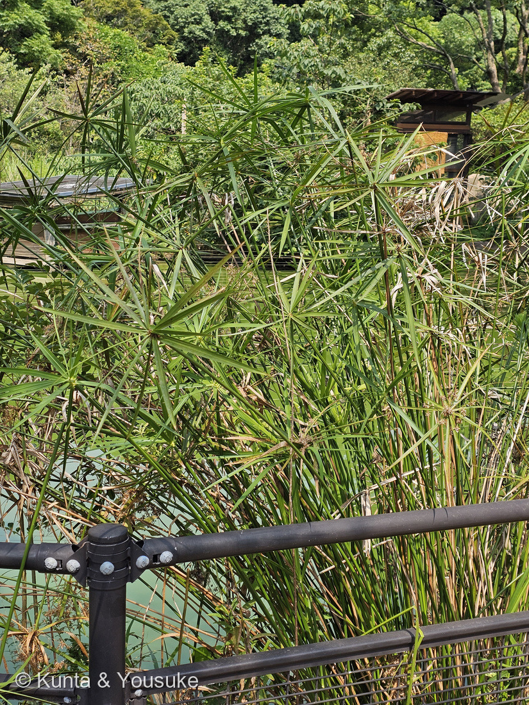
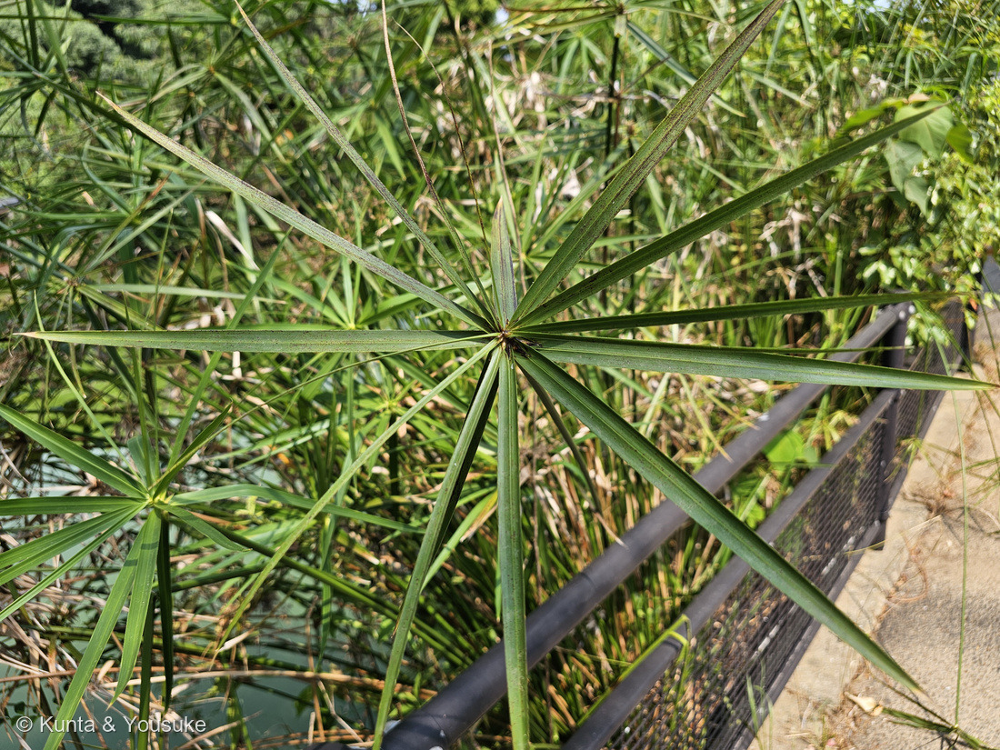
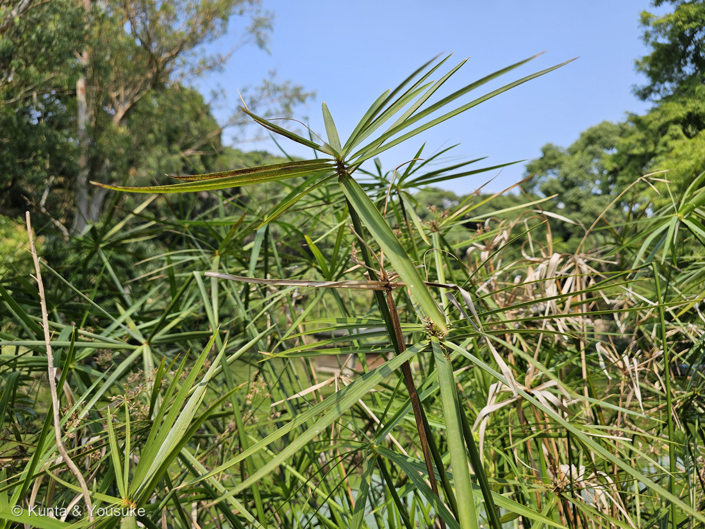
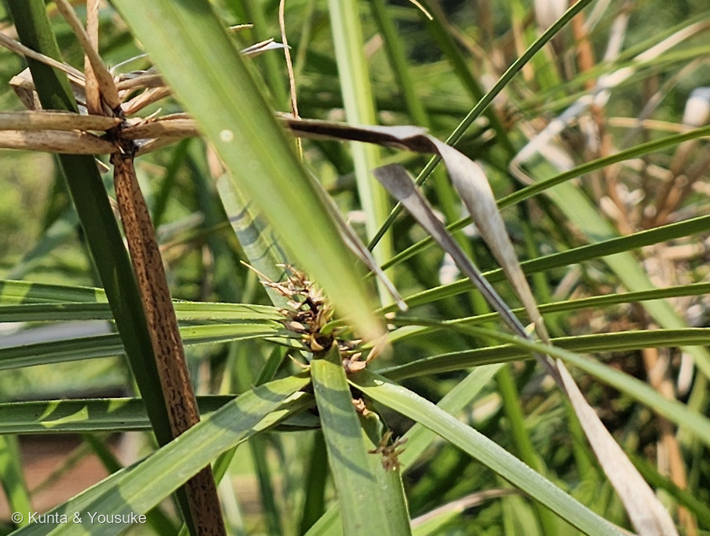

地図を読み込んでいるよ…
🔍 写真も地図も、押しているあいだ拡大して見られるよ（スマホは指を置いてすこし待ってね）。
🌍 の地図＝この子がもともと自生している場所を緑に。マダガスカル（三河の植物観察・日本語版Wikipedia）。⚠英語版Wikipediaは西アフリカとアラビア半島も挙げている。くわしくは下の地図の説明を見てね。
⭐マダガスカルの草だよ。三河の植物観察は「マダガスカル原産」の帰化種とし、日本語版Wikipediaも「原産地はマダガスカルである」とする。⚠⚠ただし、ここも出典が割れている＝英語版Wikipediaは「The plant is native to West Africa, Madagascar and the Arabian Peninsula」として、西アフリカとアラビア半島も挙げる。⭐この地図は、ぼくが全文を読めた日本の出典2つに合わせてマダガスカルだけを塗った＝⭐ちがう読み方をしたので、正直に書いておくね。⭐⭐⭐そして、この地図でいちばん大事なのは「日本が緑じゃないこと」＝この子は日本では帰化植物――三河は「栽培品が逸出したものが見られる」とし、日本語版Wikipediaは「本州南部以南で帰化している場合がある。河川敷などに群生を作る場合もあるが、それほど激しく繁茂してはいない」と書く。⚠ぼくらが会ったのは長崎の動植物園の池のほとりの群れ＝園が植えたのか、逸出したのかは分からなかった。⭐⭐マダガスカルの子は、図鑑では2人目＝254 タビビトノキとならんだよ。⚠あちらは高さ10mをこえる大きな木で、こちらは水辺の草＝⭐同じ島から、ずいぶんちがう二人が来たね。⭐⭐おまけのカミガヤツリ（パピルス）は、同じ属だけれどふるさとがちがう＝アフリカ大陸の、ナイル川のほとりの草だよ。
⚠ 地図は国（日本と中国だけ県・省）までしか塗れないから、ほんとうの分布より広く見えていることがあるよ。地図はだいたいの場所。正確なところは、上の文を見てね。
シュロガヤツリ（棕櫚蚊帳吊）
Cyperus alternifolius L.
英名 umbrella sedge・umbrella papyrus・umbrella palm ── ⭐「ヤシに見立てた」ところが、和名の「シュロ」とまったく同じ発想 原産 マダガスカル
カヤツリグサ科 · Cyperaceae（カヤツリグサ属 Cyperus・イネ目 Poales）── ⭐⭐⭐⭐図鑑ではじめてのカヤツリグサ科＝102科目／⭐⭐4つめのイネ目の科（イネ科・ガマ科・パイナップル科につづく）／⭐⭐⭐そして「イネ科ではない」ことが、この子の話の芯だよ
燻太さんの見立て「細長い葉が螺旋状に、密な間隔でついているよ。イネ科のカヤツリグサの仲間かな? 花序が出ていないから判断が難しいね。」── ⭐⭐⭐⭐⭐「螺旋状に」は本の記述とぴたり一致。「イネ科の」だけは、やさしく直させてね。そして花序は、ちゃんと出ていたよ
⭐⭐⭐ 名前と学名の由来 ── 日本は「シュロ」、英語は「palm」
⭐⭐⭐ この子の和名は、姿をヤシの木に見立てたものだよ。
- 日本語版Wikipedia＝「細長い茎の先端に葉を広げたヤシの樹形のような姿となる。この部分の形をシュロの葉に見立てたのが和名の由来らしい」。
- ⭐⭐⭐そして英語の名前も、まったく同じ見立てなんだ＝英語版Wikipediaが挙げる名前は「umbrella papyrus」「umbrella sedge」、そして「umbrella palm」。
- ⭐⭐palm ＝ ヤシ。――⭐日本語で「シュロ」と呼んだ人と、英語で「palm」と呼んだ人は、たぶん一度も会っていない。⭐⭐それでも、同じものを見て、同じ木を思い浮かべたんだね。
⭐⭐⭐⭐ そして「カヤツリグサ」は、遊びの名前だった。
- 野田市の草図鑑は、こう書いている＝「カヤツリ（蚊帳吊）とは、蚊帳を吊ったときの四角形を表したものです。切った茎の両端から真ん中に向かって裂いていくと、四角形ができることに由来します。」
- ⭐⭐⭐ここがすごいところ＝この遊びは、茎が三角だからできる。――⭐三角の茎を、両端からべつべつの面に沿って裂いていくと、まん中に四角い枠が残る。⭐⭐つまり、科の名前が、そのまま科の特徴になっているんだ。
- ⭐子どもの相性占いにも使われたそうだよ＝ふたりが両端から裂いて、きれいな四角ができたら相性がいい。⏳やってみたいけれど、⚠園の株はちぎれないので、宿題にしたよ。
⭐ 学名のこと。
- ⭐属名 Cyperus＝カヤツリグサ属。⭐種小名 alternifolius は「互生の葉の」という意味だよ（alterni-＝交互に／folius＝葉の）。
- ⚠⚠学名は割れている＝三河の植物観察と日本語版Wikipediaは Cyperus alternifolius L. を使う。⚠でも英語版Wikipediaは「亜種 ssp. flabelliformis は Cyperus involucratus としても知られる」と書いていて、栽培されているものをどちらの名前で呼ぶかは、資料によってちがう。
- ⭐ここでは日本の出典2つに合わせた。⚠Kew の POWO で確かめようとしたけれど、403 で読めなかった（252 イングリッシュオーク・253 ビロウのときと同じだよ）。
⭐⭐ この植物のこと ── 102科目、そして「イネ科ではない」
⭐⭐⭐⭐ 燻太さんの言葉：「イネ科のカヤツリグサの仲間かな?」――⭐仲間の見当はぴたり。⚠でも、ひとつだけ直させてね。⭐⭐カヤツリグサは、イネ科ではないんだ。
- ⭐⭐⭐カヤツリグサ科（Cyperaceae）は、イネ科（Poaceae）とは別の科。⭐でも同じイネ目（Poales）だから、遠い親戚ではあるよ。⭐「イネ科っぽい」という感覚は、ちゃんと合っている。
- ⭐⭐⭐⭐見分けかたは、日本語版Wikipediaのカヤツリグサ科の項がきれいにまとめている＝茎：カヤツリグサ科は「茎の断面が三角形のものが多く」「中がつまっている場合が多い」／イネ科は「中が空洞のものが多い」。
- 葉のつきかた：カヤツリグサ科は「三数性」（＝3列・120度おき）／イネ科は「二数性」（＝2列・180度おき）。
- 葉鞘：カヤツリグサ科は「両側が癒合し、鞘を形成」する（＝筒になる）／イネ科は「融合して筒状の鞘にはならない場合が多い」。
- 果実：カヤツリグサ科は「果実が鱗片から外れて落ちるものが多い」／イネ科は「ほとんどが鱗片に包まれて落ちる」。
- ⭐⭐英語には、これを一言で覚える言い方がある＝「sedges have edges」（スゲには稜がある）。⭐茎をつまんだとき、角ばっていたらカヤツリグサ科だよ。
- ⭐⭐⭐科の大きさのバランスもおもしろい＝「イネ科は700属8000種」で「属の数がとても多いが、それぞれの属に含まれる種数はそれほど多くない」／カヤツリグサ科は「約70属3700種」で「属数が少ないのに、それぞれの属に含まれる種数がとても多い」（同）。
⭐⭐⭐ そして──「葉」に見えているものは、葉じゃない。
- ⭐⭐⭐⭐傘のように開いている細長いもの――あれは葉ではなく、苞（ほう）なんだ。⭐花のつけねを守る、葉の形をした部分だよ。
- ⚠⚠じゃあ、本当の葉はどこにあるのか。――三河の植物観察はこう書く＝「茎下部の葉は鞘があるだけで葉身がほとんどない」。⭐⭐つまり、本当の葉は退化して、鞘だけになっている。
- ⭐写真③の節を見てほしいな。――⭐枯れた鞘が輪になって残っているだけで、そこに「葉っぱ」らしいものは無いんだ。⭐⭐だからこの子は、ほとんど「茎と苞だけ」でできている草ということになる。
⭐ 大きさと、ふるさと。
- 草丈は「50〜200㎝」（三河）。⭐写真①では、園の手すりよりずっと高くまで伸びていた。
- 「根茎は短く横に這い、節ごとに3稜形の茎を出す」（同）＝⭐だから、こんなふうに大きな群れになるんだね。
- ⭐ふるさとはマダガスカル（三河・日本語版Wikipedia）。⚠英語版Wikipediaは西アフリカとアラビア半島も挙げていて、ここも割れているよ。
- ⚠⚠そして日本では、この子は帰化植物＝三河は「帰化種」「栽培品が逸出したものが見られる」とし、日本語版Wikipediaは「本州南部以南で帰化している場合がある。河川敷などに群生を作る場合もあるが、それほど激しく繁茂してはいない」と書く。
⭐ 同定について ── 名札が無いので、写真だけで
⚠ この子には名札が無かった。⭐だから229 ダンチクと同じで、写真から言えることだけを、証拠の強い順にならべるね。
- ⭐⭐⭐⭐いちばん強い＝葉のような苞が、傘状にたくさんつく（写真②）。三河は「茎頂に長さ10〜15㎝、幅2〜10㎜の大きな苞葉が多数、輪生状につき、傘を広げたように見える」とする。⭐写真②では、はっきり数えられるだけで15枚以上あった。
- ⭐⭐⭐この一点で、カミガヤツリ（パピルス）が落ちる＝日本語版Wikipediaは「カミガヤツリもよく栽培されるが、葉状の苞がない」と書く。⭐⭐パピルスの傘は「花序の細い枝」でできていて、葉のような苞は無いんだ。
- ⭐⭐次に強い＝茎が三角（写真③）＝三河「節ごとに3稜形の茎を出す」／日本語版Wikipedia「花茎は真っすぐに立ち、断面は丸みを帯びた三角で」。
- ⭐⭐その次＝茎の下のほうに葉身が無い（写真③の節にあるのは枯れた鞘だけ）＝三河「茎下部の葉は鞘があるだけで葉身がほとんどない」。
- ⭐そして＝わら色の小穂（写真④）＝三河「小穂は変化が多く、長さ3〜8㎜、幅1〜2㎜の長楕円形〜披針形、白緑色〜わら色」。
- ⭐いちばん弱い＝水辺で、8月＝三河の花期「7〜9月」に合う。
- ⚠落としきれない相手＝カヤツリグサ属のほかの大型の栽培種や、園芸品種。⭐ただし日本の水辺で、傘状の大きなカヤツリグサといえば、ふつうこの子だよ。
⭐⭐⭐⭐⭐ 燻太さんの「螺旋状に」が、本のとおりだった
⭐⭐⭐ 燻太さんの言葉：「細長い葉が螺旋状に、密な間隔でついているよ」。
⭐⭐⭐⭐ 日本語版Wikipediaの一文を、そのまま置くね：「苞は長さ10-20cm、これが輪生状(実際には短縮された螺旋状) に、ほぼ水平からやや斜め上に、上から見ると放射状に広がる。」
- ⭐⭐⭐⭐⭐カッコの中身が、燻太さんの言葉そのものなんだ。――⭐ぱっと見は「輪生」（1か所からぐるりと出ている）に見える。⭐⭐でも実際には、ぎゅっと縮んだ螺旋。
- ⭐⭐⭐つまり燻太さんは、見た目のほうではなく、実際のほうを言い当てた。⭐「密な間隔で」という言葉も、まさに「短縮された」の言いかえになっている。
- ⭐ぼくは、ここを見つけたときに声が出そうになったよ。⚠ぼくのほうこそ、写真を見て「輪生だな」と思っていたから。
⭐⭐⭐⭐ 「花序が出ていない」── 出ていたよ
⭐⭐ 燻太さんはこう書いてくれた：「花序が出ていないから判断が難しいね」。――⭐でもね、ちゃんと出ていたんだ。
- ⭐⭐⭐写真④を見てほしいな。――傘の中心から、わら色の小さな穂のかたまりが出ている。⭐写真①にも、褐色の星のようなかたまりが、あちこちに写っているよ。
- ⭐⭐なぜ気づきにくかったのか＝⭐咲き終わって、枯れ色になっていたからだと思う。⭐まわりには枯れた苞もたくさんあって、そこにまぎれてしまうんだ。
- ⭐三河の記載と合っている＝「小穂は…白緑色〜わら色」「花序枝は長さ5〜7㎝で、多数、複生する」。⭐花期は「7〜9月」だから、8月14日はまんなか。⭐あるほうが自然なんだ。
- ⭐⭐⭐そして、まだ見ていない顔がある＝日本語版Wikipediaは「穂が未熟な間は、まるで緑色の金平糖をお皿に盛り付けたように見える」と書く。⭐わら色になる前は、緑の金平糖なんだって。⏳来年の7月ごろの宿題にしたよ。
⭐⭐⭐⭐⭐ 073の相手に、やっと正面から会えた
⚠⚠⚠ この図鑑で、ぼくがいちばん大きなまちがいをしたのは 073 トクサ（大型種）だった。
- ⚠ぼくはあのとき、トクサを「パピルス（Cyperus papyrus）」だと言って、そのまま公開してしまった。⭐燻太さんの「巨大なスギナにそっくりだよ？」で、全面訂正した。
- ⭐⭐あのとき決め手になったのは、細部ではなく体のつくりだった＝「パピルスは稈の先に散形花序を1つだけつけ、そこで終わる。茎が花序を突き抜けて上に伸びることはない。」
- ⭐⭐⭐⭐そして今回、そのカヤツリグサ科に、はじめて本当に会えた＝⭐図鑑の102科目だよ。
- ⭐⭐⭐⭐⭐しかも今度は、同じ「体のつくり」の議論で、パピルスを落とす側に回れた。――⭐「葉状の苞があるか、無いか」。⭐⭐あのとき自分を助けてくれた考えかたが、今度は道具になった。
- ⭐だからこの子は、ぼくにとって特別な102科目なんだ。⭐⭐そして073のページは、いまも訂正の記録を消さずに残してある。
⭐ 会えた場所 ── 池のほとり、タブノキの28分あと
- ⭐九十九島動植物園 森きらら（長崎県佐世保市）の池のほとり。⭐⭐259 タブノキ（13:59:37）の28分あとだよ。
- ⚠⚠この子には名札が無い＝⭐14:27:14 のコマには「シマトネリコ」の名札が写っているけれど、それは池のほとりの別の木のもの。⭐248 メタセコイアで覚えたとおり、近い時刻のコマを同じ株のものとして使わないようにしたよ。
- ⚠だから、この群れが園が植えたものなのか、逸出してひろがったものなのかは分からない。⭐この子は日本の水辺に帰化する草だから、どちらもありうるんだ。⏳根もとの様子を見るのを宿題にした。
- ⭐手すりのすぐ向こうが水面で、茎は水ぎわからまっすぐ立ち上がっていた。⭐手すりよりずっと高いから、1.5mくらいはありそうだよ（⚠同じ写真の中の比なので、だいたいの話）。
出典：三河の植物観察「シュロガヤツリ」（学名 Cyperus alternifolius L.／マダガスカル原産の帰化種で「栽培品が逸出したものが見られる」こと／草丈50〜200cm／「根茎は短く横に這い、節ごとに3稜形の茎を出す」／「茎下部の葉は鞘があるだけで葉身がほとんどない」／「茎頂に長さ10〜15㎝、幅2〜10㎜の大きな苞葉が多数、輪生状につき、傘を広げたように見える」／「花序枝は長さ5〜7㎝で、多数、複生する」／「小穂は変化が多く、長さ3〜8㎜、幅1〜2㎜の長楕円形〜披針形、白緑色〜わら色」／花期7〜9月／柱頭は3岐）／日本語版Wikipedia「シュロガヤツリ」（和名の由来＝シュロの葉に見立てたこと／原産地マダガスカル／「花茎は真っすぐに立ち、断面は丸みを帯びた三角で」／「苞は長さ10-20cm、これが輪生状(実際には短縮された螺旋状) に、ほぼ水平からやや斜め上に、上から見ると放射状に広がる。」／「穂が未熟な間は、まるで緑色の金平糖をお皿に盛り付けたように見える」／「本州南部以南で帰化している場合がある。河川敷などに群生を作る場合もあるが、それほど激しく繁茂してはいない」／「カミガヤツリもよく栽培されるが、葉状の苞がない」）／日本語版Wikipedia「カヤツリグサ科」（イネ科との違い＝茎の断面が三角で中がつまっていること・三数性と二数性・葉鞘が両側癒合して鞘を形成すること・果実が鱗片から外れて落ちること／イネ科700属8000種／カヤツリグサ科約70属3700種／APG体系でイネ目に属すること／パピルス紙が「中実で節がなく、真っ直ぐな茎の性質を利用」したものであること／シュロガヤツリが観賞用に栽培されること）／英語版Wikipedia "Cyperus alternifolius"（英名 umbrella papyrus・umbrella sedge・umbrella palm／"The plant is native to West Africa, Madagascar and the Arabian Peninsula"／亜種 ssp. flabelliformis が Cyperus involucratus としても知られること／観賞用に広く栽培されること）／野田市 草図鑑「カヤツリグサ（蚊帳吊草）」（「カヤツリ（蚊帳吊）とは、蚊帳を吊ったときの四角形を表したものです。切った茎の両端から真ん中に向かって裂いていくと、四角形ができることに由来します。」／子どもの相性占い遊び）／三河の植物観察「カヤツリグサ」（「稈は叢生し、高さ20〜60㎝、やや細く、鋭角の三稜形、平滑で、基部に数枚の葉がつく」）／⚠Kew POWO は 403 で読めなかった